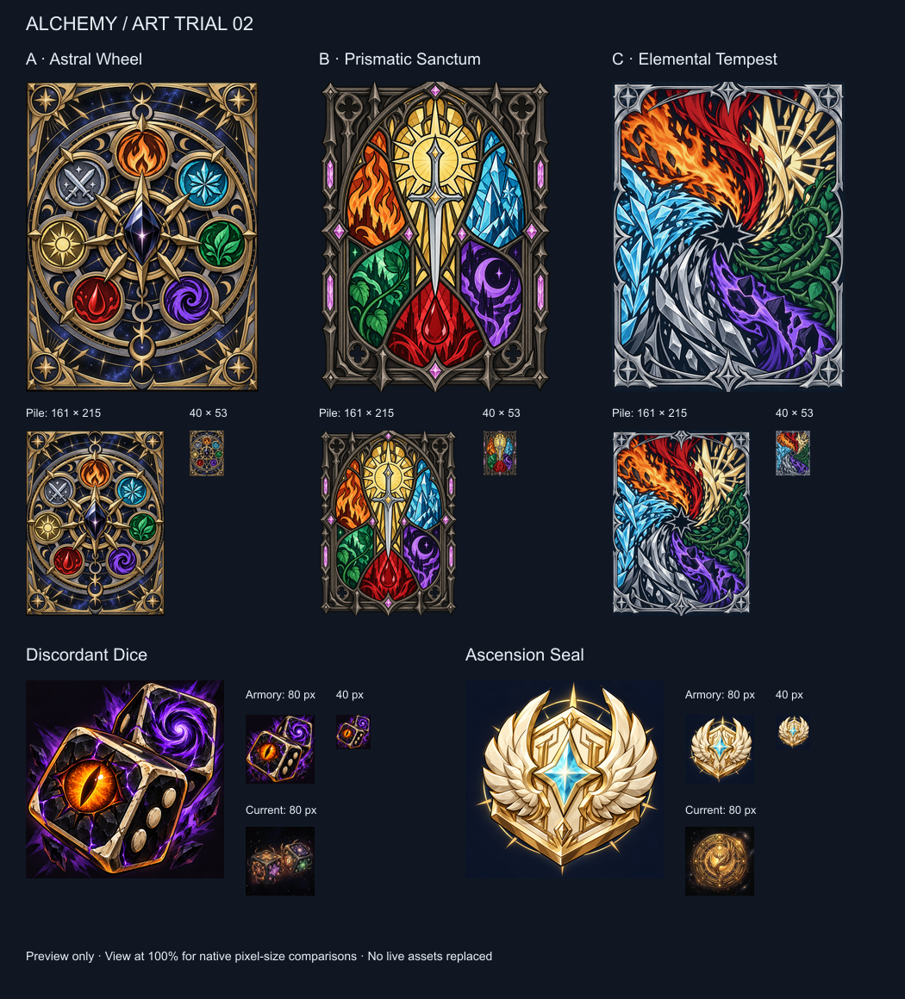

Art trial 02 · Scroll horizontally on smaller windows to retain native sample sizes.
deck astral wheel · deck prismatic sanctum · deck elemental tempest · discordant dice · ascension seal · Generation prompts
